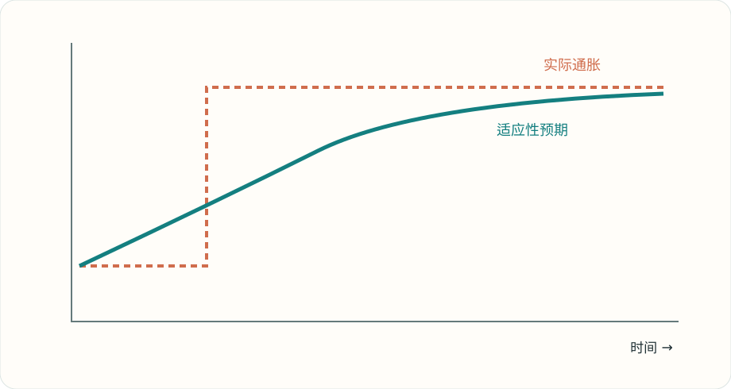
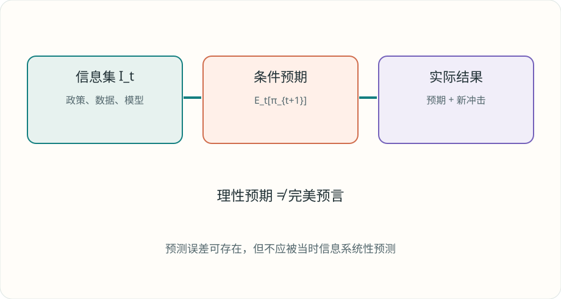
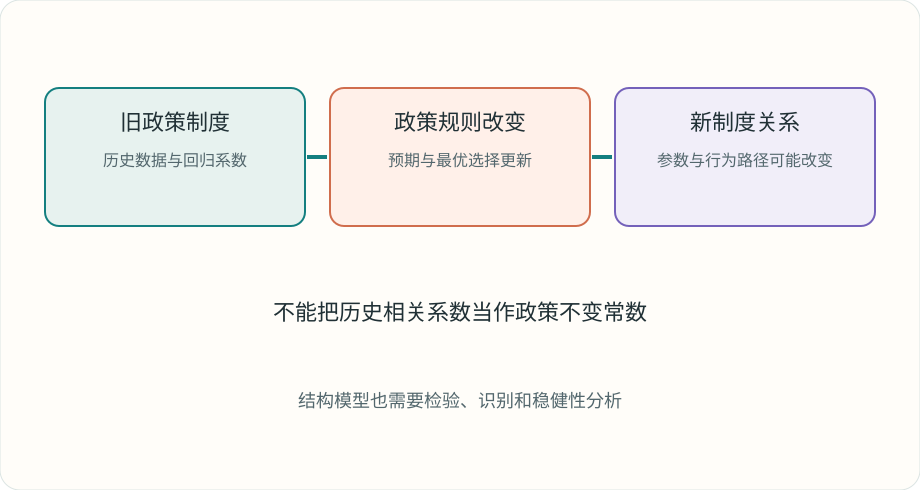
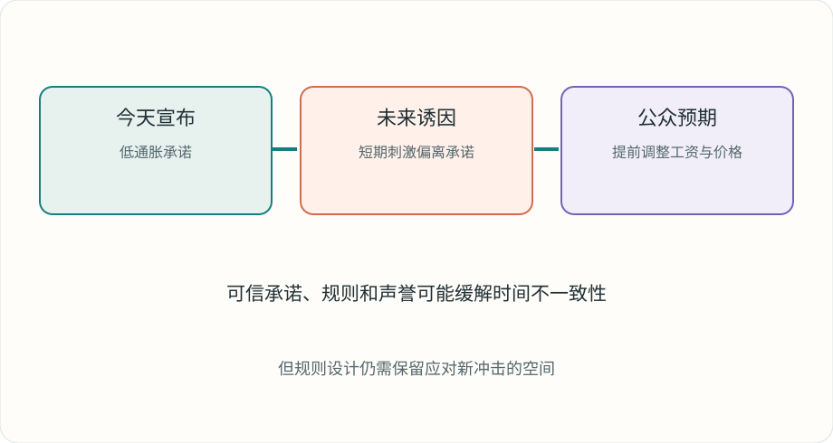
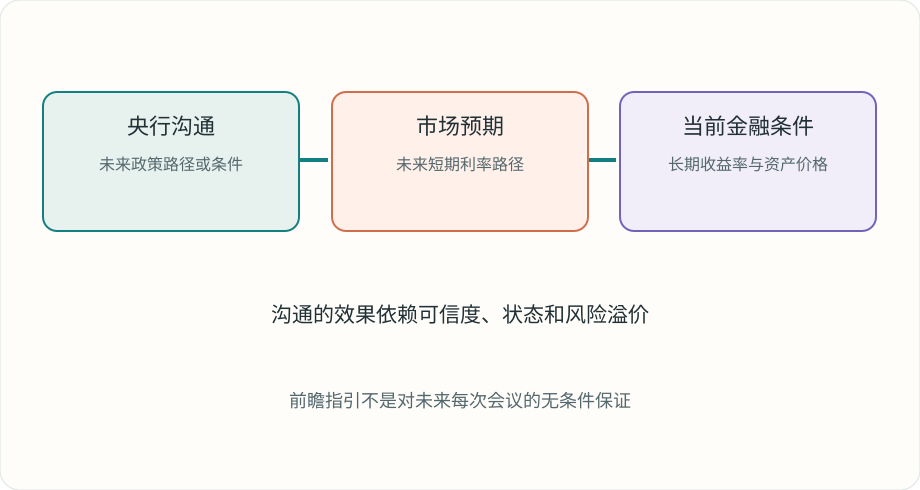

预期与宏观经济学
政策为什么不能只按历史数据推演？从预测规则、理性预期和政策承诺，理解预期如何改变经济行为。
适应性预期为什么会逐步修正，却可能反应滞后？
一种简单的预测规则是：本期预期从上期预期出发，再按上期实际值与上期预测值之间的误差进行调整。令 π_t 表示通胀，π_t^e 表示对当期通胀的预期，λ 是调整速度：
如果通胀突然从 2% 跳到 6%，而公众只根据上一期误差修正，那么预期会逐期靠近新水平。λ 越大，修正越快；λ 越小，滞后越明显。适应性预期并不意味着人们“愚蠢”，它只是描述一种使用过去误差更新预测的规则。若环境稳定且信息有限，这类规则可能是有用近似；若制度和政策发生结构变化，它可能调整得太慢。

理性预期是不是意味着每个人都能准确预测未来？
不是。Muth 的理性预期假说强调，预期会使用与经济系统相关的可用信息，并与模型所描述的均衡预测相一致。用信息集 I_t 表示决策者在 t 时刻可用的信息，则：
在模型正确、信息集明确的设定下，预测误差不应能被当时可用信息系统性预测；但单次预测仍可能错得很远。宏观经济存在未预期冲击、数据修订、模型不确定性和信息分散，现实中的家庭与企业也不必都掌握同一个完整模型。

卢卡斯批判为什么要求重新审视政策评估模型？
历史数据中的消费、投资、工资和价格关系，是家庭与企业在当时政策制度下作出选择后形成的。若政策规则发生变化，预期和最优决策也可能改变，历史回归系数便不一定保持不变。卢卡斯批判针对的是把政策环境下估计的约化关系，直接当作政策改变后仍然稳定的行为参数。
例如，若家庭相信减税是永久性的，它可能调整消费和储蓄；若认为减税只是一次性的，则反应可能不同。相同的历史相关性，在不同政策承诺和预期形成机制下未必代表同一结构。政策分析因此需要明确行为机制、预期规则和制度环境，而不是只把历史系数外推。

为什么最优的临时政策可能无法成为可信承诺？
时间不一致性指：政策制定者在今天宣布一条未来计划，但当未来真正到来时，重新优化可能让它有动机偏离原计划。私人部门会预见这种激励，提前调整工资、价格和资产配置，原本希望获得的意外刺激因此可能无法实现。
Barro–Gordon 式货币政策模型展示了一个通胀偏差机制：若决策者希望把产出推到自然水平之上，事后可能有制造意外通胀的诱因；理性预期主体会把这一诱因纳入通胀预期，结果均衡通胀偏高，而长期就业收益并未持续出现。规则、承诺装置、声誉和制度治理可能缓解问题，但“规则”并非所有冲击下都优于任何形式的相机抉择。

央行如何通过未来利率沟通影响今天的金融条件？
前瞻指引是央行对未来政策路径或决策条件的沟通。因为长期利率与资产价格不仅受今天的隔夜利率影响，也会反映市场对未来短期利率的预期，所以未来路径的沟通可能影响今天的按揭利率、债券收益率和企业融资成本。
前瞻指引可以是时间型、状态型或更定性的政策沟通；它不是对未来每一次会议的无条件保证。若经济前景改变，央行可能更新指引，市场也会重新评估承诺的可信度。标准 DSGE 模型的“前瞻指引谜题”提醒研究者：基准模型可能高估很远期承诺对今天需求的影响。

交互实验：通胀制度变化后，预期需要多久追上？
实际通胀从初始水平跳到一个新的、永久维持的水平。青色路径使用适应性预期规则；紫色基准假定决策者已知新制度永久生效且模型完全正确，因此当期就更新到新水平。该紫色线是一个信息完全的基准，不是对现实所有理性预期主体的预测。
来源与进一步阅读
- Muth (1961), Rational Expectations and the Theory of Price Movements
- Lucas (1976), Econometric Policy Evaluation: A Critique
- Kydland & Prescott (1977), Rules Rather than Discretion
- Barro & Gordon (1983), Rules, Discretion and Reputation
- Federal Reserve, What Is Forward Guidance?
- Del Negro, Giannoni & Patterson (2023), The Forward Guidance Puzzle